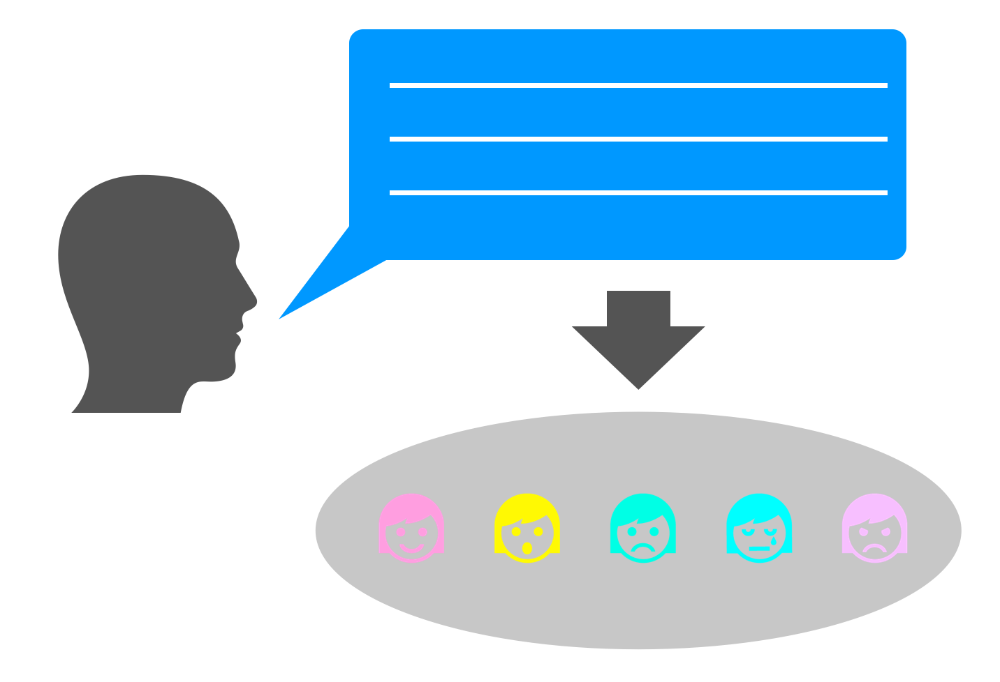
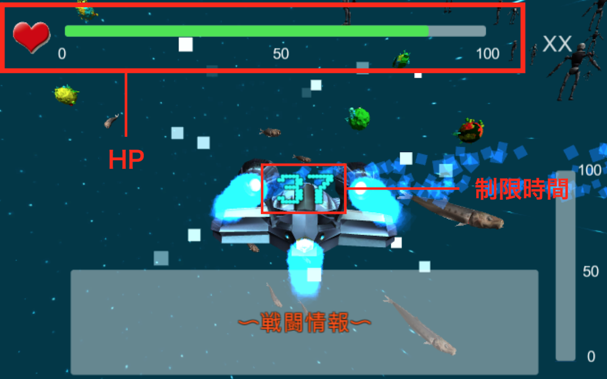

卒業研究
言語処理系の研究室に所属後、テキストからEmotion(感情)を取得するための方法を提案する 研究をしました。機械学習、分類器の特性、統計学について学ぶことができました。
H27全国高専プロコン：GPSあーとなび
高専4年次にリーダーとして課題部門に参加しました。部門テーマは「スポーツで切り拓く明るい社会」で私たちはGPSログ機能によってサイクリングやランニングで走行した 軌跡によって地図上にアートを描くというGPSあーとなびを開発しました。

宇宙を守れ！PIST2
大島商船で開催された中国高専コンピューターフェスティバルで作品展示したゲームです。 前回のPIST1から進化してより3Dっぽい宇宙で戦うゲームを作成しました。 会場ではプレゼン発表も行いました。
地球を守れ！PIST1
高校3年生の高専祭で作品展示したゲームです。 この作品が私にとって初めてのゲーム構成をきちんと考えて作成したゲームです。 未確認生物がUFOに乗って地球に上陸して体当たり攻撃してくるところを 銃で撃ち殺す謎ゲームです。Unityで作りました。
Pianist：鍵盤楽器運指練習システム
OculusRiftにPSEyeを2つ取り付けステレオカメラ化した上で、 現実の映像にARで運指アニメーションや運指番号付き楽譜を表示します。 さらに、LeapMotionを用いてユーザの運指を取得し、間違った運指を指摘したり、 運指をクラウド経由で共有化して練習を促進してくれるというものです。